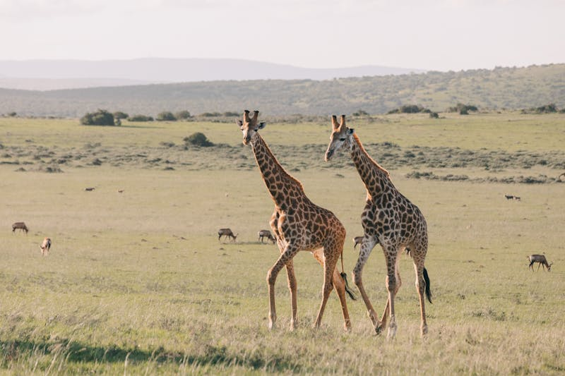
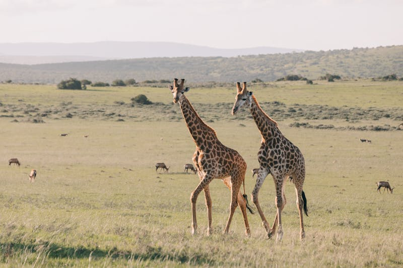

Save Saadiyat's Giraffes!
Wildlife Parks and Giraffe Conservation
Wildlife parks and reserves have played a crucial role in giraffe conservation efforts around the world.
These efforts include:
- Habitat Protection: Wildlife parks have worked to protect and restore habitats where giraffes live, ensuring they have access to the food and water they need to thrive.
- Anti-Poaching Measures: Many parks have implemented strict anti-poaching measures to protect giraffes from illegal hunting, which has been a significant threat to their populations.
- Breeding Programs: Some parks have established breeding programs to help increase giraffe populations, especially for subspecies that are endangered.
- Research and Monitoring: Parks often conduct research on giraffe behavior, genetics, and health, which helps inform conservation strategies. Monitoring giraffe populations helps track their numbers and understand the challenges they face.
- Community Engagement: Engaging local communities in conservation efforts has been vital. Many parks educate and involve local people in protecting giraffes, which helps build support for conservation.
- Translocation Projects: Some parks have been involved in translocating giraffes to areas where they have been locally extinct, helping to re-establish populations in those regions.
Saadiyat Park's Giraffe Conservation
Saadiyat Park has emerged as a leader in giraffe conservation through its innovative and community-focused approach. Nestled on the edge of the desert, the park has transformed into a sanctuary for the endangered Rothschild’s giraffe. Through its "Adopt-a-Giraffe" program, the park has raised significant funds to support habitat restoration and anti-poaching efforts. Visitors are encouraged to participate in guided tours that educate them about the giraffes' plight, fostering a deep connection between the public and these gentle giants.
The park also collaborates with international conservation organizations, sharing research and best practices to enhance global giraffe conservation efforts. With its lush, carefully managed environment, Saadiyat Park has not only provided a safe haven for giraffes but has also inspired a new generation of conservationists to continue the fight for these magnificent creatures.
 
